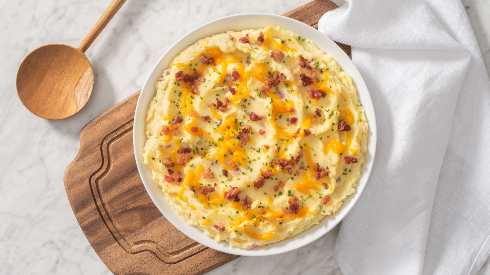

Mashed Potatoes

Description
This bacon-cheddar mashed potatoes dish is an easy and flavour dish perfect for the holidays.
Ingredients
- Yellow-fleshed potatoes, peeled and chopped into 1-inch pieces(3 lb)
- Unsalted Butter(6 tbsp)
- Better Than Bouillon® Roasted Chicken Base(2 tbsp)
- 2% milk(3/4 cup)
- Shredded Cheddar cheese(1 cup)
- Crumbled ready-cooked bacon(3/4 cup)
- Finely chopped fresh chives(3 tbsp)
Steps
- In large saucepan of boiling salted water, cook potatoes for 15 to 20 minutes or until fork-tender. Drain well; return to saucepan set over low heat.
- Meanwhile, in saucepan set over medium heat, cook butter and chicken base for about 2 minutes or until butter is melted and starting to sizzle. Stir in milk; cook, stirring, for 2 to 3 minutes or until milk is heated through.
-
Stir milk mixture into potatoes; mash until smooth. Fold in cheese, bacon and chives.
Please note that this recipe is taking from Better than Bouillon It was used to complete the Odin Project assignment